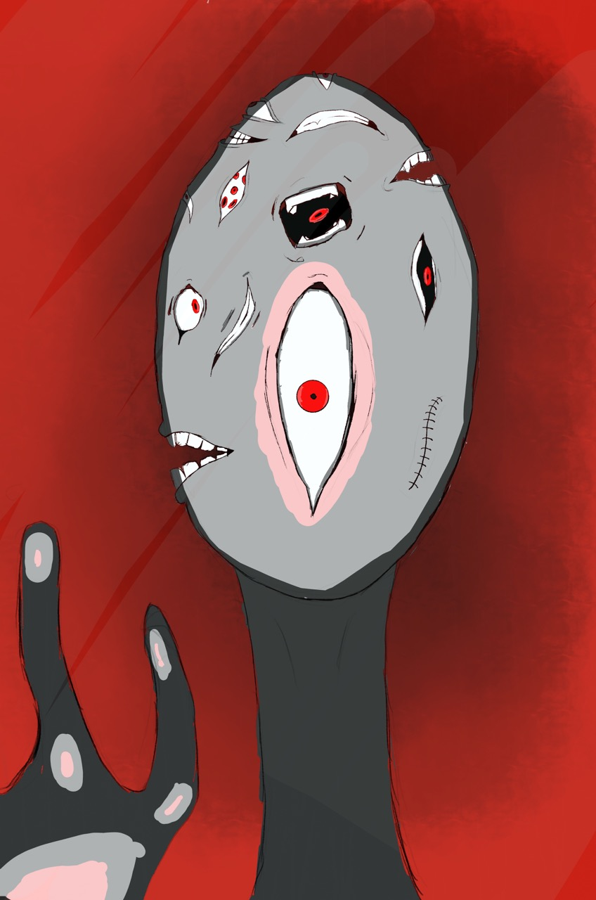
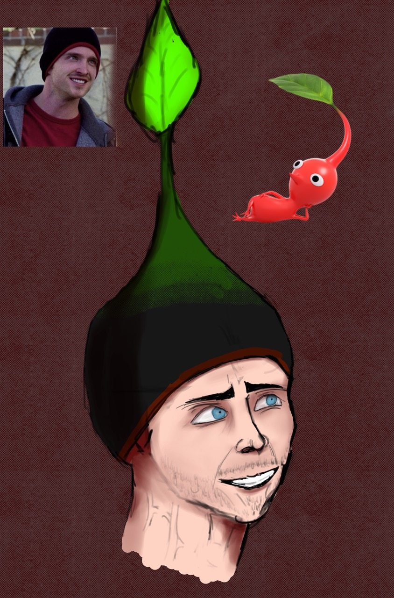
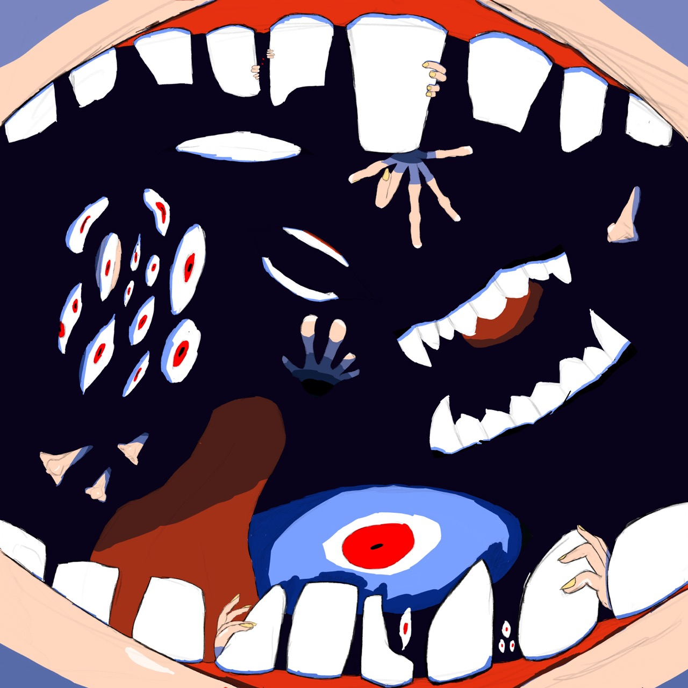
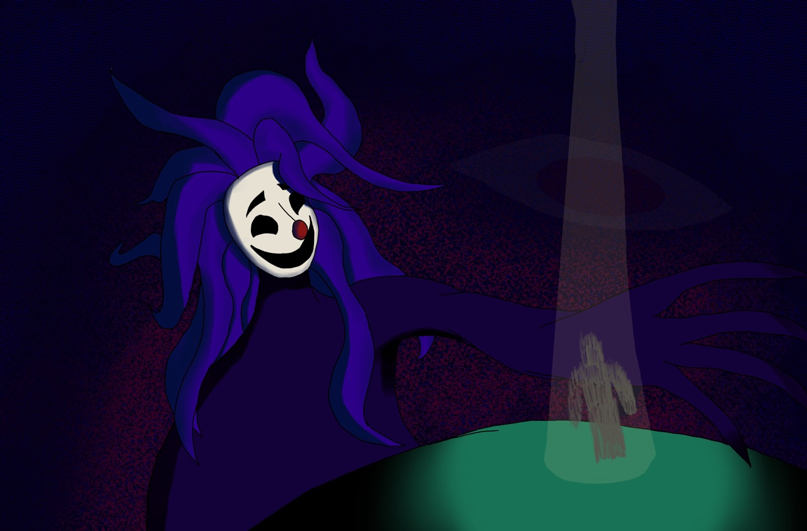
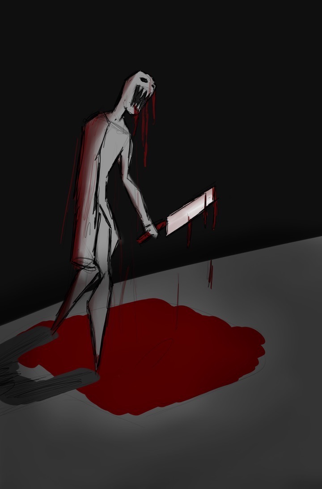
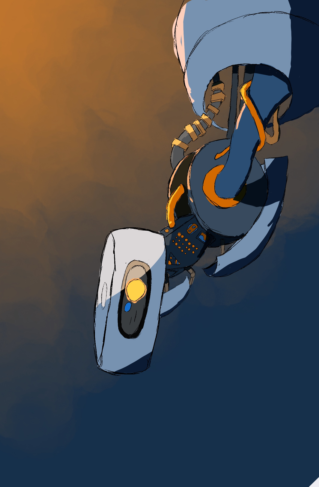
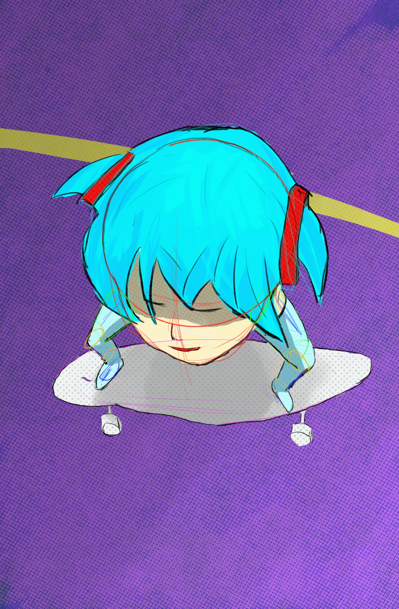
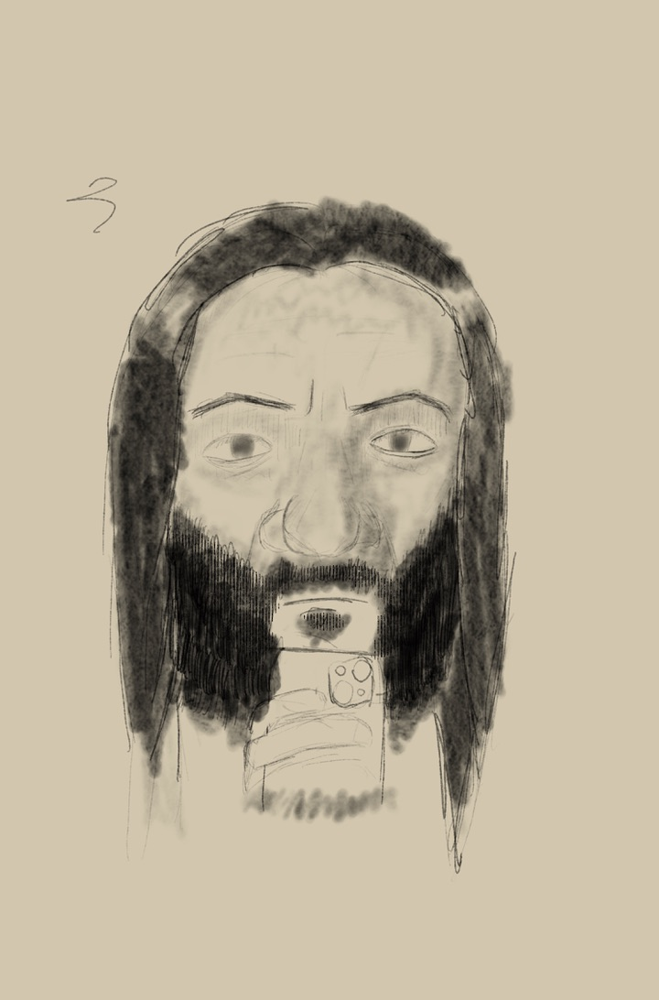
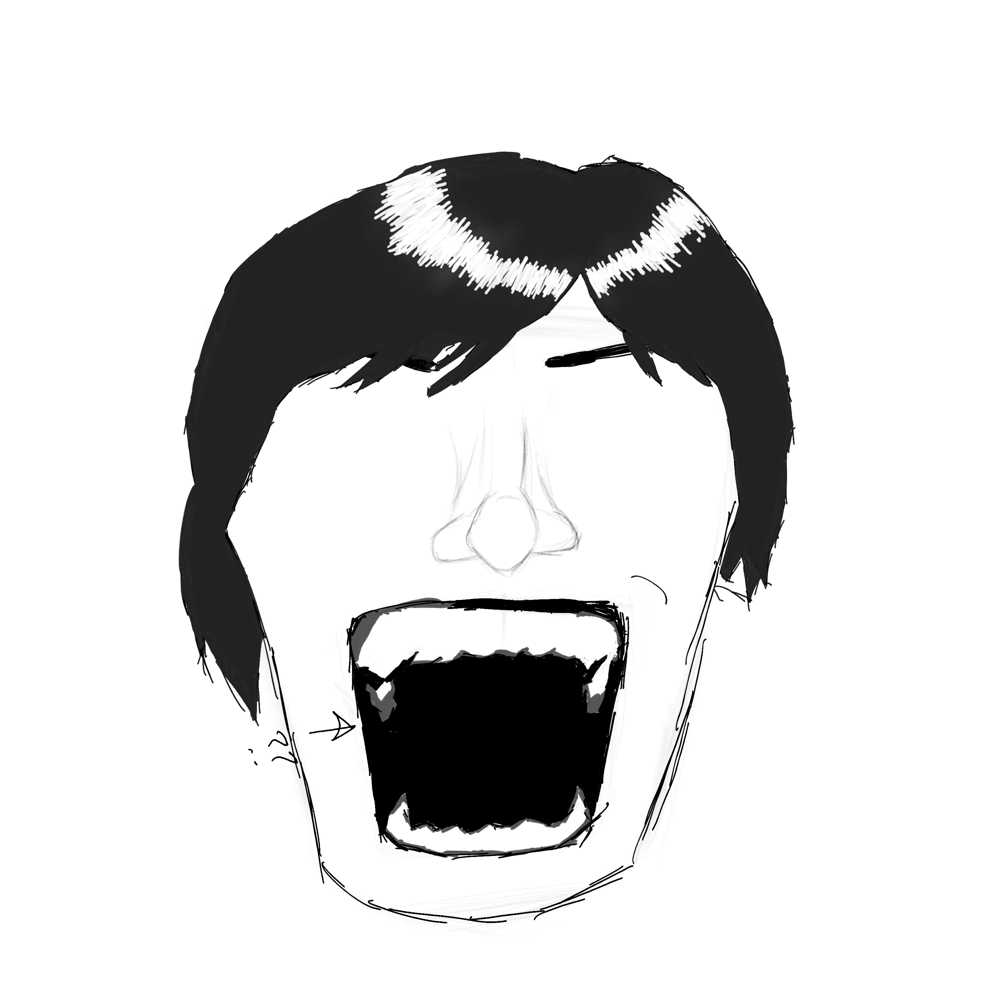
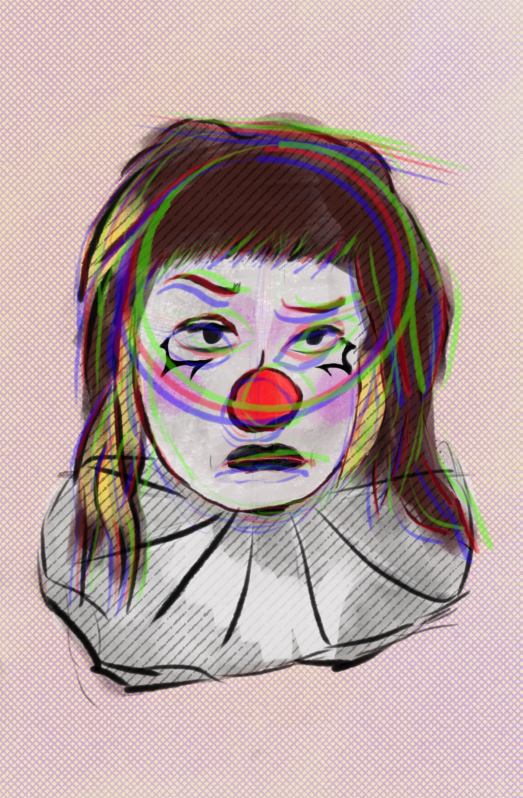

A while ago i got gifted an ipad mini by a family member, so out of interest i borrowed my sisters pencil and fell in love with learning how to draw. Drawing for some reason made me really statisfied/happy. So since then i've kept drawing (we're 2 months in now at the time of writing this) and really enjoyed it ever since. Here are some of the results:
this was for a 30 day drawing challenge i'm doing currently. the prompt was to paint a scene or character from your favourite movie so i picked tokyo godfathers.
i got bored of practicing so i decided to turn practice into a piece and draw this thing instead of drawing 90 mouths side by side again :(
i just heard the name jesse pikmin from someone and decided to draw it :p
this was the same with the practicing thing, got bored and decided to incorporate it into a piece
idk what to say about this/what it is, i just thought of this scene. probably some of my cleanest lineart but man i hate lineart
wanted to draw a full body of something and was failing all day, at the end of the day thought of a scene that reminedd me of signalis and painted that
i had to retry glados 5 times because the geometry was fucking with my brain, this was the only time it worked. it's also only using 2 hue's (i think)
this frame came from a tiktok. when i started out i drew frames from tiktoks that i found.
also from a drawing challenge, had to do a self portrait, and decided (which i regret) doing it "realistic".
second attempt at drawing teeth, i think it worked out well
another frame from a tiktok, from tiktokker turnip the clown this time